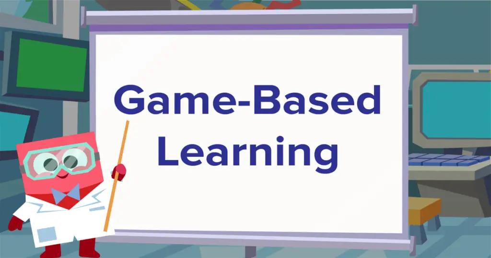

Los beneficios de los videojuegos han llegado también a la enseñanza con el game-based learning o aprendizaje basado en los juegos electrónicos. Este método educativo utiliza lo bueno de los videojuegos para transmitir conocimientos a los estudiantes y se fundamenta en tres puntos clave:
Muchos padres recelan de las videoconsolas y no quieren verlas en casa
por miedo a que perjudiquen el rendimiento escolar de sus hijos.
Sin embargo, los beneficios de los videojuegos incluyen el desarrollo de habilidades
como la atención, la creatividad, la memoria, los idiomas y el trabajo en equipo.